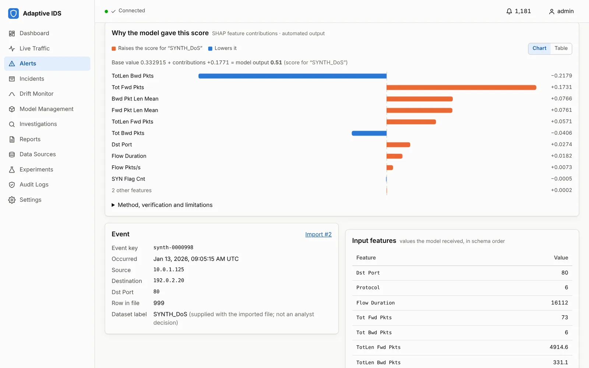
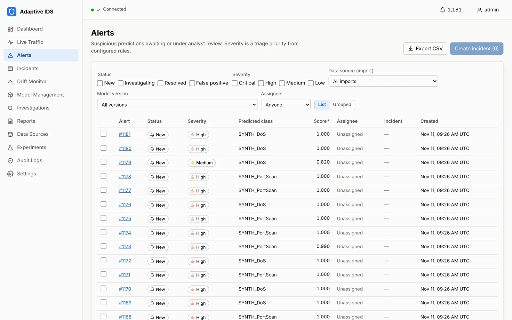
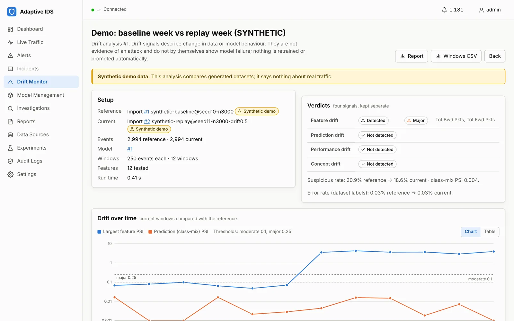
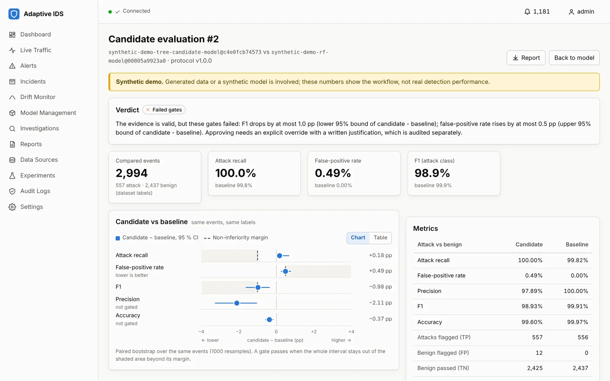
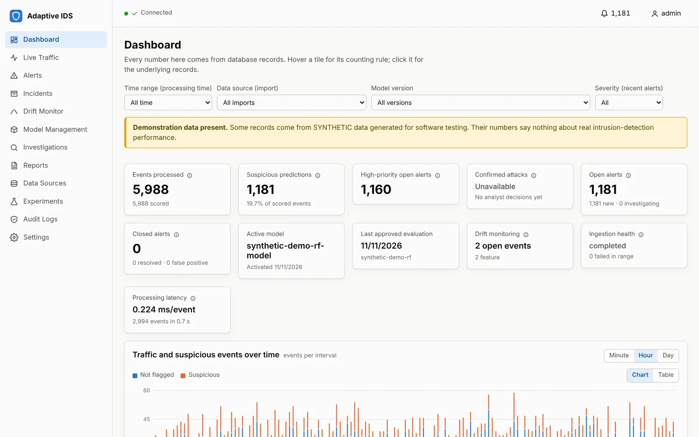
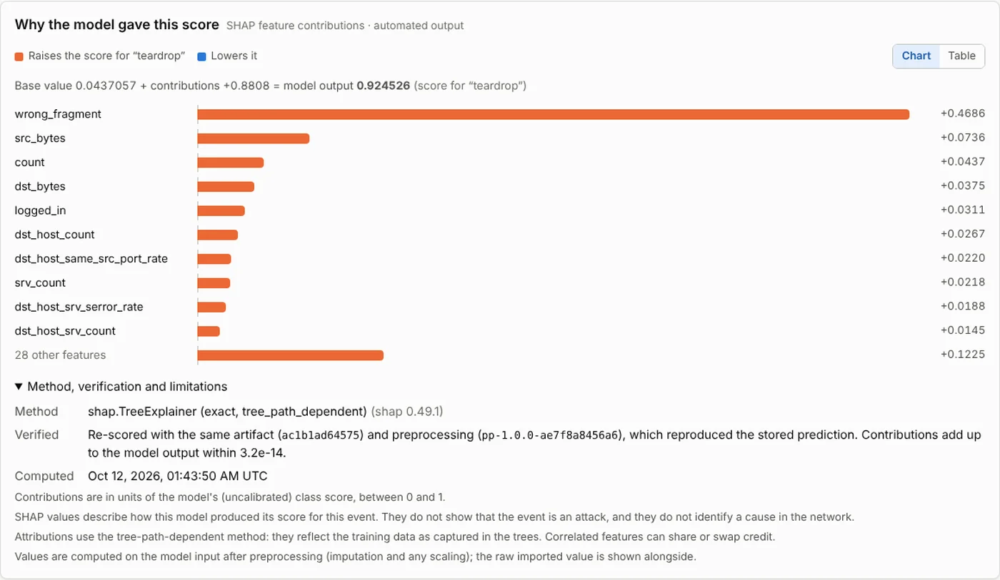
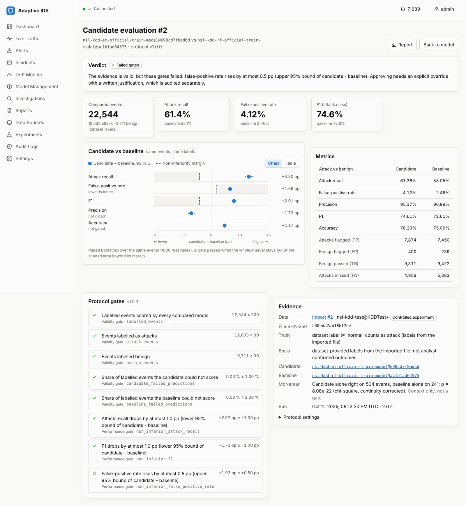

Network intrusion detection for small security teams and MSSPs
Machine-learning detection you can explain, monitor and change safely.
Adaptive IDS scores your network-flow records with a machine-learning model and makes every step accountable: each alert shows why it fired, traffic changes are flagged as drift, and no new model goes live without evidence and a named approver.
- Runs on your own hardware
- No data leaves your network
- Read-only, alongside your existing tools

Demo
See it working in two minutes
A captioned walkthrough of the real application: alerts, explanations, drift monitoring and a model update that the approval gate blocks.
The walkthrough uses the built-in, clearly labelled SYNTHETIC demo data, so its scores are near-perfect by design. Results on public research datasets are under Evidence.
The problem
ML detection is easy to switch on and hard to trust
Security teams are offered machine-learning detection they can't see inside, can't tell is still working, and can't change safely, so it ends up ignored or trusted blindly.
Opaque alerts
A score or "anomaly" with no reason. Analysts rebuild the reason by hand, or stop trusting the tool.
Silent decay
Networks change. Detection quality drifts with them, and nobody notices until something is missed or the queue floods.
Ungoverned updates
A retrained model goes live because it "looks better", with no paired comparison, no named approver and no tested way back.
Product
Accountable at every step
A self-hosted web application with a browser dashboard. Import network-flow exports, score them, investigate alerts, watch for drift and govern model changes, all with an audit trail.
Explanations that are checked, not estimated
Exact SHAP contributions for every alert, from the same model that produced it.
- The event is re-scored before the explanation is shown, and must reproduce the stored prediction.
- The contributions must add up to the model's score, or nothing is shown.
- Analyst decisions are stored apart from model output: a prediction is never called a confirmed attack.

Drift, four ways, kept separate
Feature, prediction, performance and suspected concept drift each have different causes and responses.
- Per-feature statistics against a reference window, with documented thresholds.
- Each drift signal becomes an event to acknowledge, investigate and close with a note.
- Drift never retrains or promotes a model by itself.

Model updates need evidence and a signature
A candidate is compared with the active model on the same labelled events.
- It must not be worse on recall, F1 or false-positive rate by more than a set margin, judged on paired confidence intervals.
- A failed candidate can only go live with a written, audited override.
- Activation and rollback first prove the model still loads and reproduces its recorded outputs.

Built to run on your premises
Local-first by design, with the controls a security buyer expects.
- Runs on one machine inside your network; makes no outbound connections.
- Admin, analyst and read-only viewer roles; throttled sign-in; idle sessions.
- Audit log of every sign-in, import, decision, approval and export; verified backup and restore.

How it works
Analysts decide; models change only through governance
Evidence
Tested on public datasets, including where it falls short
Every figure below was measured by the product on public research data (NSL-KDD and CSE-CIC-IDS2018). It has not yet run on a customer network; that is what an evaluation adds.


Honest limits
- No model in our tests caught new attack types on the day they first appeared. Adaptive IDS shows you when that is happening rather than hiding it.
- On attack types not seen in training, NSL-KDD recall is about 60 % at a 2–4 % false-positive rate.
- It analyses exported flow files in batch; live capture is on the roadmap, driven by evaluation feedback.
Who it's for
Teams that must justify every alert
Managed security providers
One install per client site, an explanation and audit trail behind every alert you report, and governed model changes across clients.
Regulated small and medium organisations
Network data stays on site, and auditors can see how automated detection decisions were made and approved.
Universities and training providers
A working platform for teaching explainable, governed machine learning in security.
Free evaluation
Try it on your network for six weeks, at no cost
A read-only evaluation on one network segment, on your own hardware, judged against success criteria we agree before any results exist.
- Week 1, set-up. Install on your machine together, load your first flow export, agree the success criteria.
- Weeks 2–5, use. Your analysts triage explained alerts alongside existing tools; a 30-minute call each week.
- Week 6, results. A report you approve before anyone else sees it; data deleted or kept, as you choose.
No data leaves your organisation and no remote access is needed. A one-page authorisation, covering scope, retention and deletion, is signed before any data is used.
FAQ
Questions security teams ask
Does it detect zero-day attacks?
No, and we won't claim it does. Supervised models learn the attacks they have been shown; our own tests show none caught new attack types on their first day. Adaptive IDS is built to show you when detection is degrading and to make model updates safe.
Where does our data go?
Nowhere. It runs on your machine, inside your network, and makes no outbound connections. During an evaluation, only aggregate results leave, in a report you approve first.
Does it replace our IDS, SIEM or EDR?
No. It runs read-only alongside your existing tools and never blocks or changes traffic.
What data does it need?
Network-flow records exported as CSV (for example CICFlowMeter output or converted NetFlow), and ideally some labelled history. No packet payloads.
Can it analyse live traffic?
Today it analyses exported flow files in batch; a full day of about a million flows imports and scores in roughly ten minutes on a 4-core machine. Live ingestion is on the roadmap if evaluations show it's needed.
Is it production-ready?
It's a tested 1.0 release (over 200 automated tests, security controls, verified backups) that has not yet run on a customer network. That's why we start with a free, read-only evaluation.
What does it cost?
The evaluation is free. After a successful evaluation we agree an annual on-premises licence, with founding-customer terms for the first organisations.
About
Built from research, tested honestly
Adaptive IDS was founded by Muhammad Haider Abbas, building on his MSc research into machine-learning anomaly detection with concept drift. Before building the product, he re-ran his own dissertation experiments, reproduced every reported figure exactly, and published why those figures overstated real-world performance. The product is designed around that lesson.